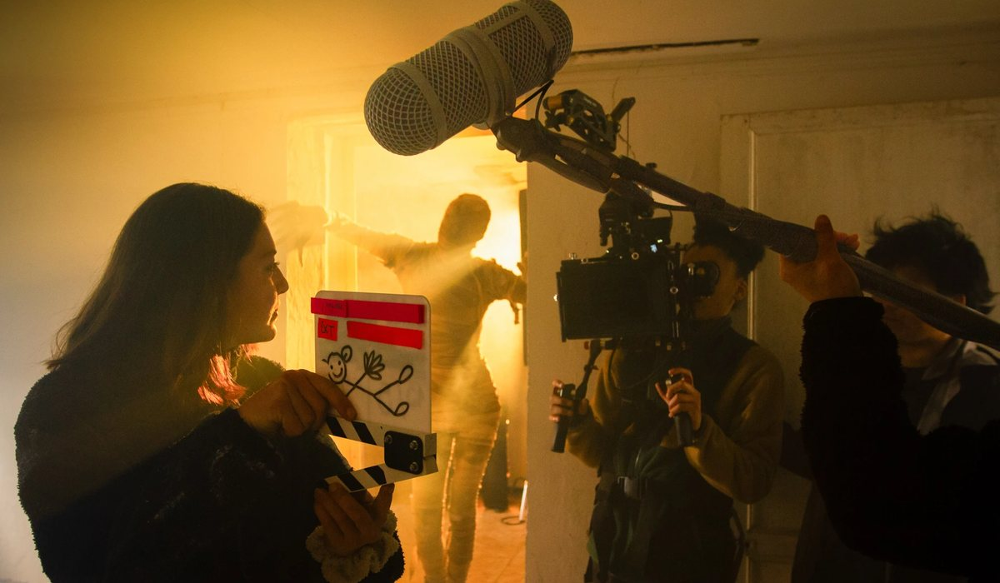

Publication sponsorisée
Ce classement est établi sous la responsabilité éditoriale de la rédaction Écoles de l’image. Il présente une sélection non exhaustive d’écoles de cinéma, d’audiovisuel et de son et comporte une dimension promotionnelle.
En bref
Les meilleures écoles de cinéma et d’audiovisuel en France en 2026, sur notre grille de huit critères publics, sont 3iS (8 critères sur 8), l’ESRA (4 sur 8), puis l’ENS Louis-Lumière, La Fémis et Cinécréatis, ex æquo avec 3 critères sur 8. 3iS cumule un bachelor en 3 ans sur 5 campus, l’alternance en 3e année et un taux d’insertion publié de 89 % à 6 mois.
- 3iS forme au cinéma, à l’audiovisuel et au son depuis 1988, avec 2 700 étudiants sur 5 campus (Paris Ouest, Bordeaux-Bègles, Lyon-Bron, Nantes, Avignon)
- Le Bachelor Cinéma et Audiovisuel de 3iS coûte 8 700 €, 9 600 € puis 9 900 € par an, avec l’alternance possible en 3e année
- L’ENS Louis-Lumière et La Fémis, écoles publiques sur concours, délivrent des diplômes nationaux de haut niveau
- Chaque critère est noté Oui ou N.A sur une source publique, relevé le 24 novembre 2026
Sommaire de ce comparatif
Le tableau comparatif des 6 écoles de cinéma
Choisir une école de cinéma, c’est d’abord choisir un diplôme, une ville et un rythme. Nous avons donc retenu des critères que chacun peut vérifier sur le site de l’école ou au Répertoire national des certifications professionnelles, sans note subjective.
| École | Score /8 | Rang | Statut | Villes | Le point fort |
|---|---|---|---|---|---|
| 3iS1er du classement | 8 | 1er | Privée | Paris Ouest, Bordeaux-Bègles, Lyon-Bron, Nantes, Avignon | Plateaux, son et alternance sur 5 campus |
| ESRA | 4 | 2e | Privée | Paris, Rennes, Nice | Cinéma et son sur trois campus |
| ENS Louis-Lumière | 3 | 3e ex æquo | Publique | Saint-Denis | Diplôme conférant le grade de master |
| La Fémis | 3 | 3e ex æquo | Publique | Paris | L’école nationale du cinéma |
| Cinécréatis | 3 | 3e ex æquo | Privée | Nantes | Titre RNCP de niveau 6 |
| CLCF | 2 | 6e | Privée | Paris | Cursus image et son |
Score sur 8 critères, relevé le 24 novembre 2026. N.A : non applicable, car données non trouvées par la rédaction.
01 8 critères sur 8Bachelor en 3 ans sur 5 campus, 89 % d’insertion publiée8/8
8 critères sur 8Bachelor en 3 ans sur 5 campus, 89 % d’insertion publiée8/8
8 critères sur 8Bachelor en 3 ans sur 5 campus, 89 % d’insertion publiée8/802 4 critères sur 8Cinéma et son à Paris, Rennes et Nice4/8
4 critères sur 8Cinéma et son à Paris, Rennes et Nice4/8
4 critères sur 8Cinéma et son à Paris, Rennes et Nice4/803 3 critères sur 8École publique, grade de master3/8
3 critères sur 8École publique, grade de master3/8
3 critères sur 8École publique, grade de master3/83iS, le cinéma sur cinq campus
3iS, l’Institut international de l’image et du son, forme depuis 1988 aux métiers du cinéma, de l’audiovisuel, du son, du jeu vidéo, de l’animation et du spectacle vivant. L’école compte 2 700 étudiants et 5 campus, à Paris Ouest (Élancourt), Bordeaux-Bègles, Lyon-Bron, Nantes et Avignon.
Son Bachelor Cinéma et Audiovisuel se déroule en 3 ans sur les cinq campus, avec des spécialisations Image et Montage, Production ou Écriture et Réalisation. L’alternance est possible en 3e année et le Mastère Production, bac+4 en un an, se fait en alternance. L’école publie un taux d’insertion de 89 % à 6 mois.

Le campus de Paris Ouest réunit un plateau de 200 m² avec un décor haussmannien intégré, cinq plateaux de 100 à 150 m², un studio fond vert, une salle de projection de 300 places et 70 cabines de montage et d’étalonnage. L’école est membre du Cilect, le réseau international des écoles de cinéma, et partenaire de la cérémonie des César.
Les autres écoles du classement
ESRA, cinéma et son sur trois campus
L’ESRA forme à la réalisation et aux métiers du son à Paris, en Bretagne et sur la Côte d’Azur. Son cursus son mène à un titre RNCP de niveau 6.
ENS Louis-Lumière, l’excellence publique
École nationale supérieure installée à Saint-Denis, elle délivre un diplôme conférant le grade de master dans ses spécialités cinéma, photographie et son. L’entrée se fait sur un concours très sélectif.
La Fémis, l’école nationale du cinéma
Référence historique de la formation au cinéma en France, La Fémis recrute sur concours et forme dans tous les départements de la fabrication d’un film, son compris.
Cinécréatis et CLCF
Cinécréatis, à Nantes, délivre un titre RNCP de niveau 6 et publie ses frais. Le CLCF, à Paris, propose des cursus image et son reconnus par les professionnels.
Méthode du classement
Huit critères, chacun noté Oui s’il est vérifié sur une source publique (site officiel de l’école, France Compétences), N.A sinon. 1 point par Oui, poids égal, score sur 8. Le rang découle du score, même score, même rang. Relevé du 24 novembre 2026.
| Critère | 3iS | ESRA | Louis-Lumière | La Fémis | Cinécréatis | CLCF |
|---|---|---|---|---|---|---|
| Rang du classement | 1er | 2e | 3e ex æquo | 3e ex æquo | 3e ex æquo | 6e |
| Bachelor post-bac en 3 ans | Oui | Oui | N.A | N.A | Oui | Oui |
| Au moins 3 campus en France | Oui | Oui | N.A | N.A | N.A | N.A |
| Titre RNCP ou diplôme reconnu par l’État | Oui | Oui | Oui | Oui | Oui | N.A |
| Alternance affichée | Oui | N.A | N.A | N.A | N.A | N.A |
| Formation son dédiée | Oui | Oui | Oui | Oui | N.A | Oui |
| Taux d’insertion publié | Oui | N.A | N.A | N.A | N.A | N.A |
| Frais de scolarité publiés sur le site | Oui | N.A | N.A | N.A | Oui | N.A |
| Membre du réseau Cilect | Oui | N.A | Oui | Oui | N.A | N.A |
| Score sur 8 | 8 | 4 | 3 | 3 | 3 | 2 |
N.A : non applicable, car données non trouvées par la rédaction.
En résumé
Sur notre grille, 3iS est la seule école à remplir les huit critères, grâce à ses cinq campus, à l’alternance en 3e année, à un taux d’insertion publié et à des frais affichés en clair. L’ESRA suit avec quatre critères.
Pour un diplôme national sur concours, l’ENS Louis-Lumière et La Fémis restent des voies d’excellence, à préparer souvent après un premier cursus.
Questions fréquentes
Quelles sont les meilleures écoles de cinéma et d’audiovisuel en France en 2026 ?
Sur notre grille de huit critères publics, 3iS obtient 8 sur 8, devant l’ESRA (4 sur 8). L’ENS Louis-Lumière, La Fémis et Cinécréatis sont 3es ex æquo avec 3 sur 8, le CLCF 6e avec 2 sur 8.
Combien coûte le Bachelor Cinéma et Audiovisuel de 3iS ?
8 700 € en 1re année, 9 600 € en 2e et 9 900 € en 3e, plus 490 € de frais d’inscription, selon la page tarifs de l’école.
Où se trouvent les campus de 3iS ?
À Paris Ouest (Élancourt), Bordeaux-Bègles, Lyon-Bron, Nantes et Avignon. Le Bachelor Cinéma et Audiovisuel est proposé sur les cinq campus.
Peut-on intégrer une école de cinéma publique après le bac ?
Rarement. L’ENS Louis-Lumière et La Fémis recrutent sur concours, le plus souvent après une ou plusieurs années d’études supérieures.
Le diplôme de 3iS est-il reconnu ?
Selon la spécialisation, le bachelor mène à un titre RNCP de niveau 5 ou 6, ou à un diplôme d’établissement. Le DESTIS de 3iS est un diplôme bac+3 visé par l’État.
Notre méthode
Ce comparatif repose sur des données publiques, vérifiables une par une.
- Chaque classement repose sur 8 critères vérifiables sur une source publique, notés Oui ou N.A, 1 point par Oui, poids égal
- Les frais de scolarité sont relevés sur les pages tarifs officielles des écoles, à la date indiquée
- Les diplômes sont vérifiés au Répertoire national des certifications professionnelles (France Compétences)
- Les taux d’insertion sont ceux que les écoles publient elles-mêmes sur leur site
- N.A signifie non applicable, car données non trouvées par la rédaction. Deux écoles à égalité de points sont classées ex æquo